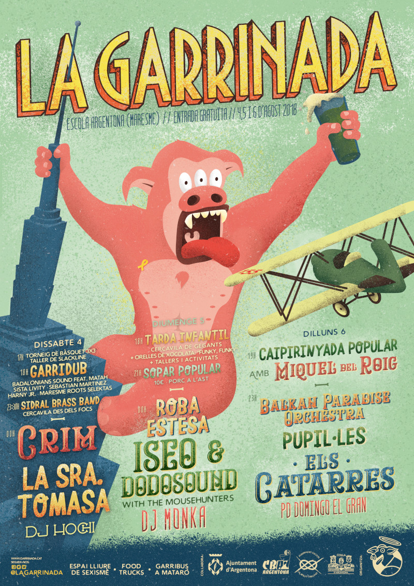

Garrinada 2018

* Dissabte 4 *
17:00h
Torneig de Bàsquet 3x3
Taller de Slackline
Graffitis
18:00h
Garridub amd Badalonians Sound
Amb Matah, Sista Livity, Sebastian Martínez, Harny Jr. i Maresme Roots Selektas
23:30h En acabar els focs
Cercavila amb la Sidral Brass Band
00:00h Concerts
La Sra. Tomasa
Fusió llatí i electrònica
Crim
Punk-Rock
DJ Hochi
Resident Sala Clap
* Diumenge 5 *
18:00h
Tarda Infantil
Cercavila dels Gegants Argentona, tallers, activitats, berenar gratuït, estampació de samarretes (us l'heu de dur) i concert familiar amb Orelles de Xocolata i el seu espectacle FUNKY, FUNKY
21:00h Sopar Popular
Crucifixió de Garrins
El millor Porc a l'ast de Catalunya per només 10€. Us heu de dur el plat i els coberts de casa. Els tiquets s'agafen allà. S'acaben ràpid!
00:00h Concerts
Roba Estesa
Folk Calentó
Iseo & Dodosound & The Mousehunters
Dub
DJ Monka
Rock, reggae, hip hop, funk, electrònica, dubstep i drum and bass
* Dilluns 6 *
18:30h
Gran caipirinyada popular amb Miquel del Roig
10€ = 7 caipirinyes + samarreta (fins a fi d'existències)
23:00h Concerts
Balkan Paradise Orchestra
Música balcànica
Els Catarres
Pop
Pupil·les
Rap electrònic
DJ Domingo el Gran
Garrihits
* Informació *
Hi ha espai de FOODTRUCKS per menjar a qualsevol hora
GARRIBÚS. Autobús nocturn entre Mataró (Estació Renfe) i Argentona (Rotonda del Pi Gros). Horari:
* Mataró -> Argentona: cada 30 minuts entre les 23:00 i les 5:30
* Argentona -> Mataró: cada 30 minuts entre les 23:30 i les 6:00
L'ENTRADA és totalment GRATUÏTA. La Garrinada s'autofinança amb els diners de la barra. Consumeix a la barra i ajudaràs a fer una Garrinada millor l'any que ve!
La Garrinada és un espai lliure de sexisme. Si et sents agredida busca a la barra una responsable del punt lila. Van sempre identificades!